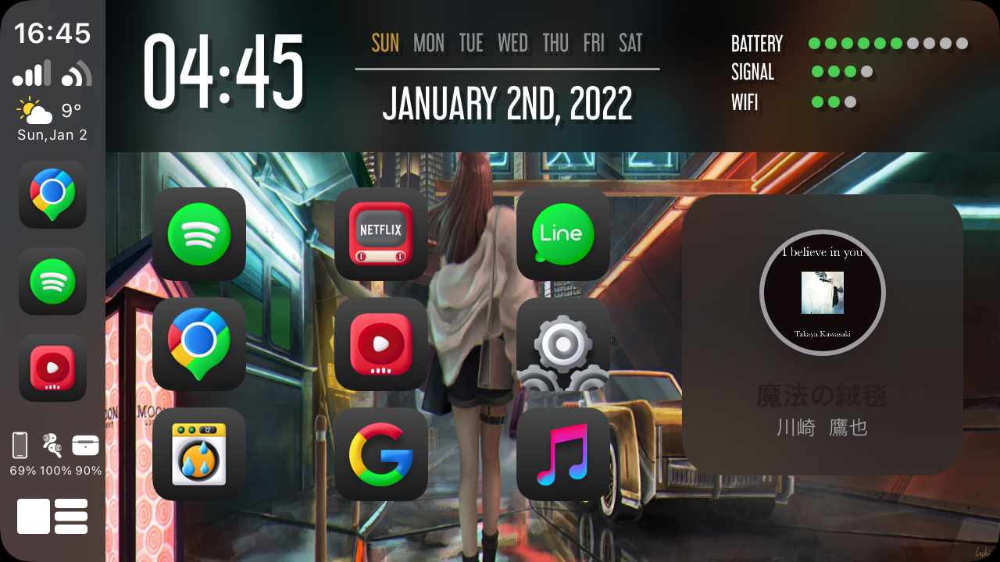
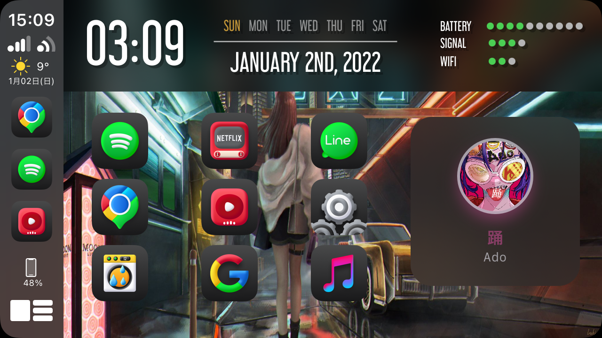
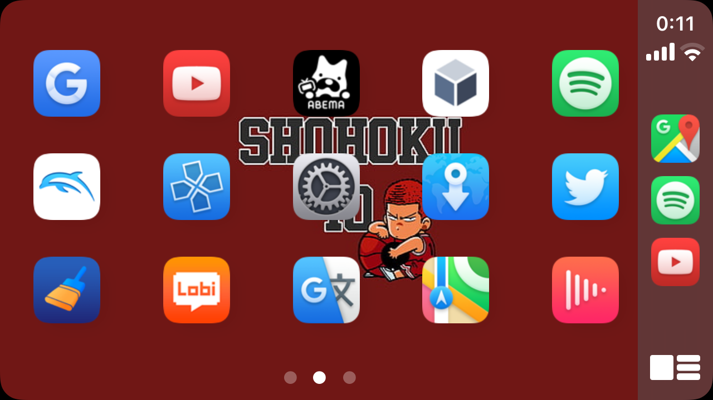
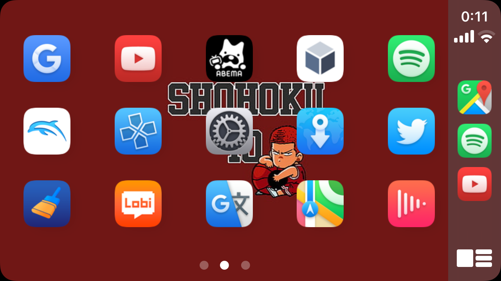

ApleCarPlay Tweak
From my observations, the CarPlay-enabled display in supported vehicles typically supports a 2×4 icon grid for a total of 8 icons on the Home Screen. For some folks, this may not be enough, and that’s where Airaw comes in handy. iDB
This Tweak needs to have the Jailbreak on the device.
If you like how CarPlay works, make me a donation through PayPal!
That will motivate me to update the tweak and put more functions on it.
or support me by following me on Twitter.
If you have a function or request you want to add, we will respond on Twitter.
Demos imagenes


 

Airaw API
Airaw API serves to facilitate the creation of widgets for CarPlay. For more information visit the Airaw API page.If you want to know more detailed creation method, I will reply on Twitter.
Features included
Icon Layout:
- Generate transparent Icons
- Choosing between 2 to 4 app icons rows on the CarPlay
- Choosing between 4 to 6 app icons columns on the CarPlay
- Choosing icons size
- CarPlay dashboard app icon Top offset
- CarPlay dashboard app icon Bottom offset
- CarPlay dashboard app icon Left offset
- CarPlay dashboard app icon Right offset
- Hide Icon Label (CarPlay)
- Hide Label Background (CarPlay)
- Choosing a custom CarPlay icon label background color
- Hiding the Dots
- Select an app to display in full screen
Wallpaper:
- Choosing between Onlywallpaper or Wallpaper Silide Show
- Choosing an image to use as the CarPlay Screen wallpaper
- Choosing between default scaling it for “fit”
- Playing music as wallpaper
StatusBar:
- Custom statusbar Enabling
- Date format & time format Customize
- Disable default Status Bar
- Status bar position
- Show weather icon
- Show temperature
- Show devices icons
Widgets:
- Add Widgets
- Widget resizing
- Widget position change
Future functions:
- Get notifications with CarPlay
- Create a folder with CarPlay
Real-time update when changing wallpaperAiraw(1.0)Status bar time can be changed to your own custom format.Airaw(1.0)Added weather forecast icon to status bar.Airaw(1.0)
Compatibility
- iOS 13~14.x
- arm64 & arm64e